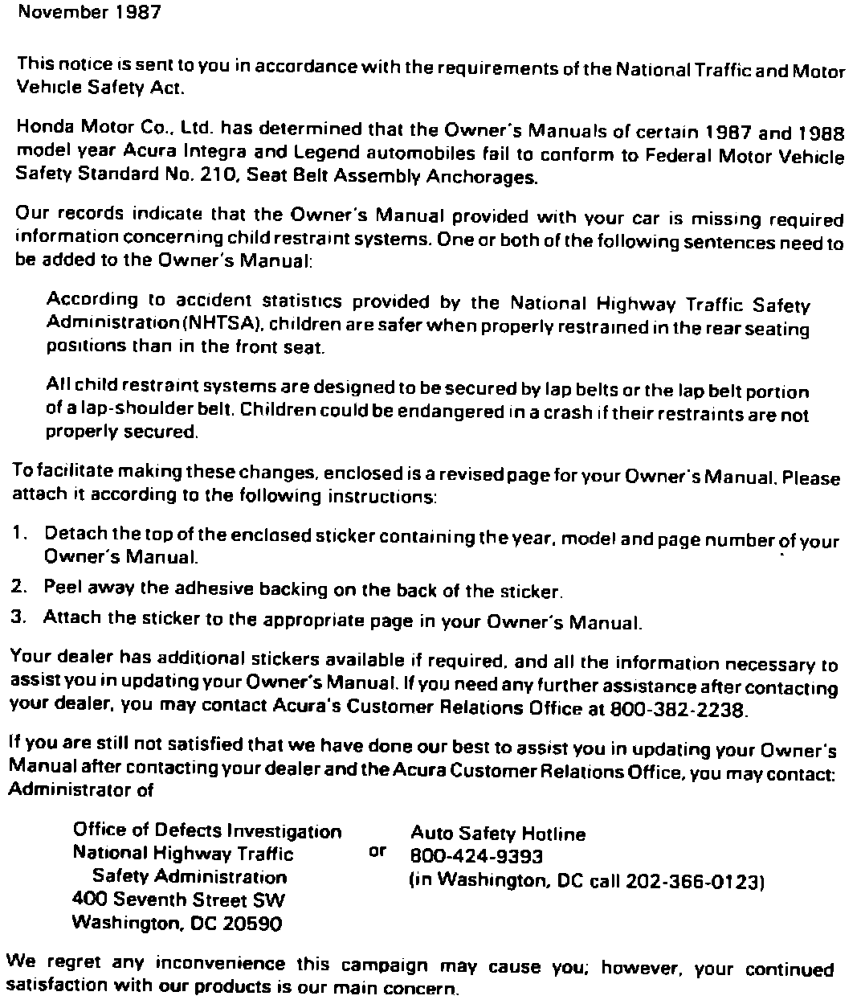

Recall - Owners Manuals
November 6, 1987BULLETIN NO. 87-031
YEAR '87-88
MODEL ALL
APPLICATION See Affected Vehicles
Recall:'87-88 Owner's Manuals (Supersedes 87-031 dated October 30, 1987)
PROBLEM
Honda Motor Co. Ltd has determined that a noncompliance with Federal Motor Vehicle Safety Standard No. 210. Seat Belt Assembly Anchorages, exists in the Owner's Manuals of certain 1987 and 1988 model year Acura automobiles. These Owner's Manuals are missing required information concerning child restraints.
AFFECTED VEHICLES
This recall applies only to vehicles manufactured on or after September 1, 1987.
1987
Integra
3-Door VIN: JH4DA3 . . . HS033372 - JH4DA3 . . . HS037748
5-Door VIN: JH4DA1 . . . HS020787 - JH4DA1 . . . HS022716
1988
Legend
Coupe VIN: JH4KA3 . . . JC001256 - JH4KA3 . . . JC004398
4 Door VIN: JH4KA4 . . . JC001133 - JH4KA4 . . . JC007786
CORRECTIVE ACTION
Inspect the cars as described below, then, if necessary, attach a sticker to the Owner's Manual of affected vehicles in your inventory.
1. Check the VIN range of affected vehicles..
^ If the vehicle is outside the affected VIN range, no further action is necessary.
^ If the vehicle is within the affected range, proceed to the next step.
2. Check the date of manufacture on the certification plate attached to the driver's door jamb..
^ If the date of manufacture is before September, 1987, no further action is necessary.
^ If the date of manufacture is September, 1987 or later, proceed to the next step.
Note:
If the car has a green disk attached to the outside of the rear window glass, the Owner's Manual has already been updated, requiring no further action.
3. Attach a sticker to the Owner's Manual according to the instructions accompanying each sticker.
PARTS INFORMATION
An initial supply of stickers containing additional required child restraint information has been included in this mailing for Owner's Manuals of cars in your inventory. Use the following information to order more stickers through the Promotional Materials Department
Year Model Reorder #
1987 Integra (All) E2061
1988 Legend (All) E0261
CUSTOMER NOTIFICATION
All owners of affected vehicles will be notified of this recall by mail. (See customer letter). Owners will be sent a sticker and be asked to attach the sticker to their Owner's Manual.
WARRANTY CLAIM INFORMATION
Operation Number: 854800
Flat rate time: 0.2 hour
Failed part P/N: 31SD4600
Defect code: 224
Contention Code: J05
NOTE:
These claims may be transmitted via AcuraLink DCS Quick-Claim format.

Example of customer letter.